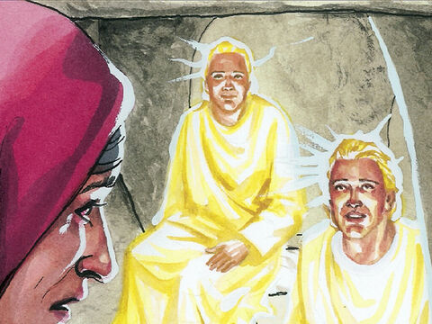
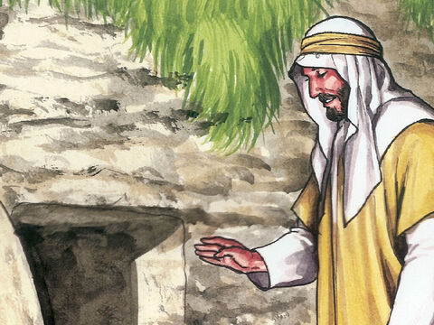

Lord Jesus Appears To Mary Magdalene
And when the sabbath was past, Mary Magdalene, and Mary the mother of James, and Salome, had bought sweet spices, that they might come and anoint him.
And very early in the morning the first day of the week, they came unto the sepulchre at the rising of the sun.
And they said among themselves, Who shall roll us away the stone from the door of the sepulchre?
Mark 16:1-3

- 


- 